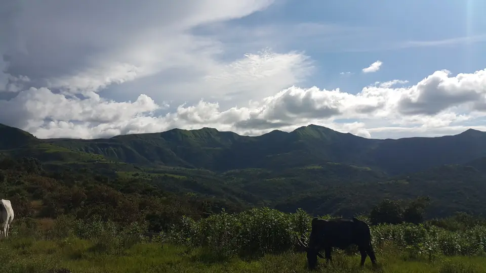
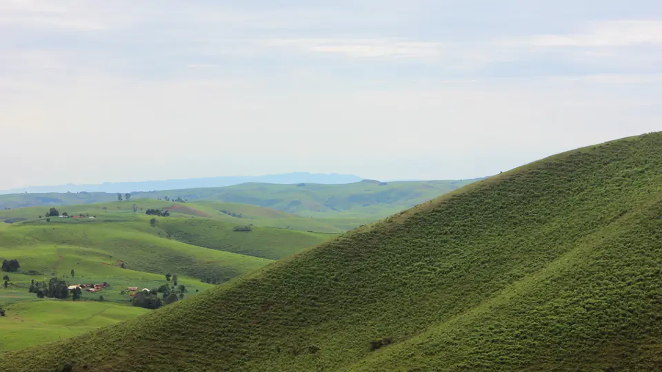
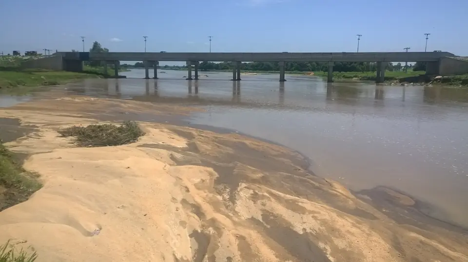

For investors, government, development institutions and technical partners. Back the group, or the one business that fits your mandate.
A company with a delivery record, building businesses where agricultural value is created, with governance in place from the start.
Operating since 2019, with training, facility management and procurement delivered to NNPCL and NCDC. Misalta Consulting is earning today.
Processing cocoa into butter and powder in Taraba State, close to where it grows, instead of shipping raw beans.
Eight businesses that feed each other: farms supply processing, hubs store, logistics moves, Trade X sells. Back the whole group or one business.
Named locations across five Taraba LGAs: Jalingo, Kurmi, Lau, Gashaka and Bali.
A board, key directors, and financial, agricultural and legal advisers oversee every business in the group.
Starting in Taraba State, with logistics, Trade X and export readiness designed for trade across Nigeria and Africa.
Every Misalta business, its current status, and the kind of partner it is looking for now.
| Business | Status | We are looking for | |
|---|---|---|---|
| Misalta Agro Processing Ltd.Cocoa butter and powder, Taraba State | In development | Project equity, equipment finance, offtake buyers | Details → |
| Misalta FarmsCultivation across Taraba State | In development | Land and cultivation partners, offtakers, input suppliers | Details → |
| Misalta Agro HubsAggregation, storage, post-harvest | Planned | Infrastructure finance, government and development programmes | Details → |
| Misalta Trade XDigital commodity marketplace | Launching soon | Technology and financial partners, early users | Details → |
| Misalta LogisticsCold rooms, specialised transport | Planned | Fleet and cold-chain finance, operating partners | Details → |
| Misalta EnergySolar and backup power | Planned | Renewable developers, installers, financiers | Details → |
| Misalta ConstructionBlocks, materials, real estate | Planned | Equipment partners, developers | Details → |
| Misalta ConsultingProfessional services | Operating | Clients: organisations and government agencies | Details → |
Tell us who you are and what interests you. We reply within two business days.
We walk you through the group and the business you're interested in. An NDA is signed where needed.
Detailed materials are shared directly, and we can arrange a visit to our Taraba sites.
We agree terms that fit your mandate, with our board and legal adviser involved throughout.
Sites in our plans for agro-processing and agro hubs. The status and role of each site will be updated as they are confirmed.
From the Mambilla Plateau to the Benue lowlands around Jalingo, Taraba combines highland farming, tea, cocoa and grain country.



Hero: Kakara tea farm, Taraba State. Photos from Wikimedia Commons; see photo credits.
Make an enquiry and we'll set up an introductory call. You can also meet our people first.